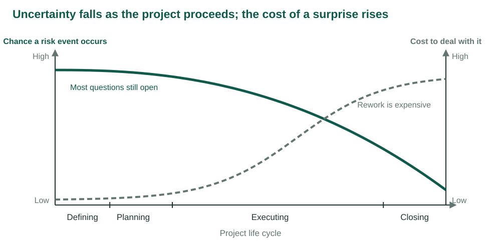
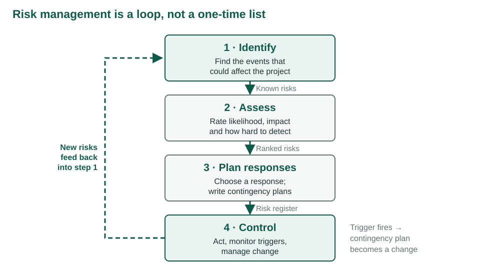
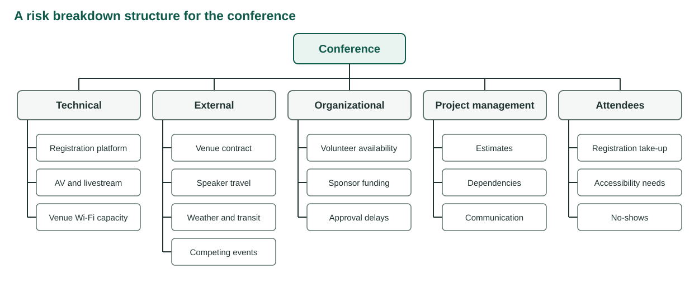
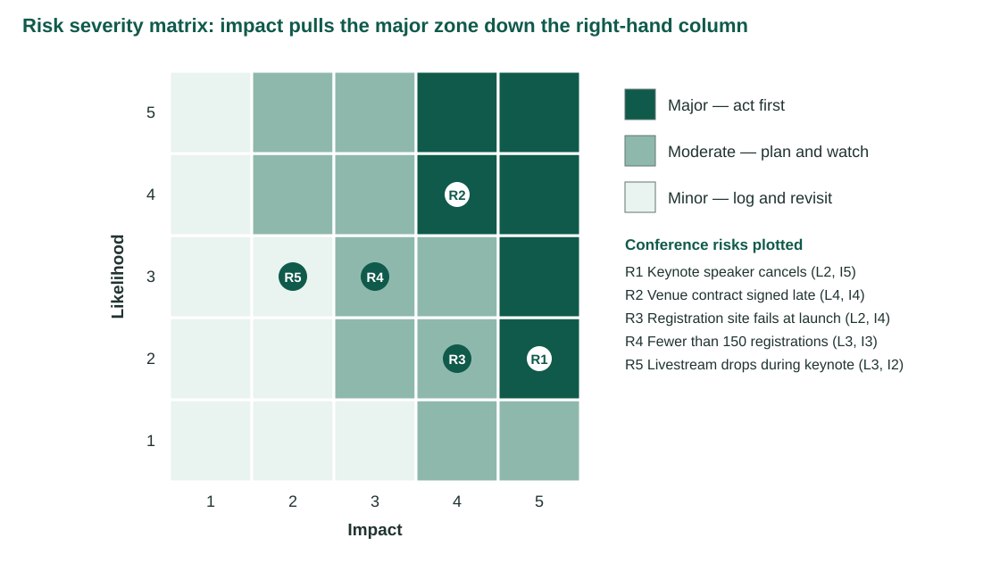
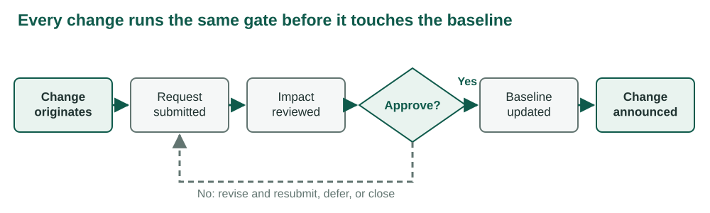
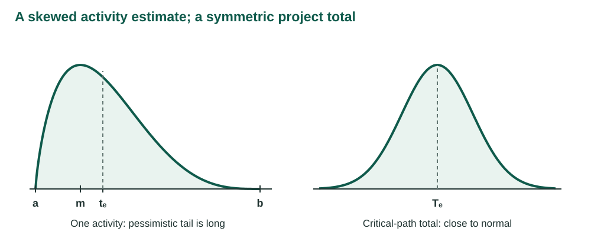
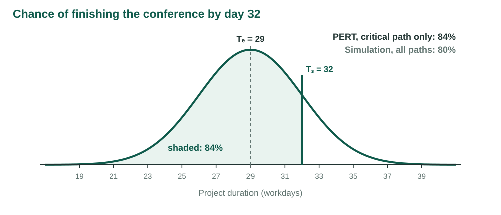

IMSE 456/656 · Larson Ch. 7
2026-10-06
A plan states what should happen. A risk plan states what you will do when it does not.
Following Larson & Gray, Ch. 7 and Appendix 7.1 [1]. Figures are redrawn from the chapter. The conference examples are original to this course.
Weeks 5 and 6 produced estimates and a schedule. Every number in them rests on an assumption.
Risk management asks three questions about those assumptions:
| LO 7-1 | Describe the risk management process |
| LO 7-2 | Identify project risks as events |
| LO 7-3 | Assess which risks deserve attention |
| LO 7-4 | Describe the five responses to a threat |
| LO 7-5 | Explain what a contingency plan adds |
| LO 7-6 | Describe the five responses to an opportunity |
| LO 7-7 | Use contingency funds and time buffers |
| LO 7-8 | Keep risk management running |
| LO 7-9 | Describe the change control process |
| LO A7-1 | Calculate PERT probabilities |
A risk event is something that may happen and would change the project’s cost, time or scope if it did.
Not a certainty. A problem you already have is solved now, not planned for.
Not an outcome. “The project is late” is a result, not an event.

Early: most questions are still open, but a change of plan is cheap. A design flaw found on paper is an edit.
Late: few questions remain, but a surprise means rework. The same flaw found after the prototype means rebuilding.
Planning buys the most protection for the least money.
Risk management is preventive work. Done well, it gives the project:
| Risk source | Who manages it | Paid from |
|---|---|---|
| Inflation, exchange rates, regulation, market demand | Senior management, before approval | Management reserve |
| Venue, speakers, registration, vendors, estimates | The project team | Project budget and contingency reserve |
The first row is weighed before the project is approved. This week concentrates on the second.

| Step | Question | Output |
|---|---|---|
| 1 · Identify | What events could affect the project? | A list of candidate events |
| 2 · Assess | How likely, how damaging, how hard to see coming? | A ranked list |
| 3 · Plan responses | What do we do before, and what if it happens anyway? | The risk register |
| 4 · Control | Is the plan working, and what has changed? | Executed plans, new risks, change requests |
The document that carries all four steps. One row per risk event:
A register written once and filed has stopped being risk management.
The commonest mistake is to list the result you fear instead of the event that would cause it.
| Outcome stated as a risk | Events that could cause it |
|---|---|
| The conference opens late | Venue contract signed late; keynote cancels |
| We go over budget | Catering minimums rise; AV adds a surcharge |
| Attendance is low | A competing event is announced the same week |
An outcome suggests no action. An event does.
Because the venue’s legal team reviews contracts monthly,
the contract may be signed late,
which would delay registration opening.
Cause → event → effect. If a sentence has no cause, it is probably an outcome.
An RBS divides the sources of risk into categories, as the WBS divides the work.

A risk profile is a checklist of questions an organization refines from one project to the next.
| Area | Question |
|---|---|
| Requirements | Has the sponsor said what success looks like, in numbers? |
| Suppliers | Which vendor failure leaves no substitute in two weeks? |
| Schedule | What depends on another organization’s calendar? |
| Budget | Which costs are quoted, and which are guesses? |
| Authority | Who can sign a contract, and how long does it take? |
Do not ask what might go wrong.
Assume the project has failed, and explain why [2].
Doubting a plan the group just approved feels disloyal. Explaining a failure that has been declared a fact does not.
Attendance was half the target.
The keynote spoke to an empty overflow room.
The sponsor has asked for a written account of what went wrong.
Five minutes. Silent. Individual.
Five sentences explaining why the conference failed.
| Story sentence | Cause | Event | Effect |
|---|---|---|---|
| “Registration opened two weeks late” | Contract review is monthly | Venue contract signed late | Registration delayed |
Which of your events are missing from the RBS?
Identification produces more risks than anyone can manage.
Assessment sorts them: drop the trivial, merge the duplicates, rank the rest.
The most common method. For each event, describe what would happen, then rate:
Define the scales first. A rating of 4 means nothing until everyone agrees what a 4 is.
| 1 | 2 | 3 | 4 | 5 | |
|---|---|---|---|---|---|
| Cost | Negligible | <10% | 10–20% | 20–40% | >40% |
| Time | Negligible | <5% | 5–10% | 10–20% | >20% |
| Scope | Barely noticed | Minor areas | Major areas | Sponsor rejects | Useless |
Thresholds are a policy choice. When an event hits more than one objective, rate it on the worst.
| Risk event | Likelihood | Impact | Zone |
|---|---|---|---|
| Interface problems | 4 | 4 | Major |
| System freezing | 2 | 5 | Major |
| User backlash | 4 | 3 | Moderate |
| Hardware malfunctioning | 1 | 5 | Moderate |
Ratings from Larson & Gray, Figures 7.6 and 7.7 [1]. Two of the four are rated unlikely and still rank high.

The zones set the order of work. They do not say what the work is.
A 10% chance of losing $1,000,000 is a worse risk than a 90% chance of losing $1,000.
Impact weighs more than likelihood, so the major zone runs further down the high-impact column.
That is why R1, a keynote cancellation rated unlikely, still lands in the major zone.
Failure mode and effects analysis adds a third rating: how hard the event is to detect in time to act.
RPN = Impact × Likelihood × Detection difficulty
Each rating runs 1 to 5. Detection: 1 = seen weeks ahead, 5 = found only when it hits.
| Risk | L | I | D | RPN |
|---|---|---|---|---|
| R1 Keynote cancels | 2 | 5 | 2 | 20 |
| R2 Venue contract late | 4 | 4 | 2 | 32 |
| R3 Registration site fails | 2 | 4 | 4 | 32 |
| R4 Under 150 registrations | 3 | 3 | 3 | 27 |
| R5 Livestream drops | 3 | 2 | 5 | 30 |
A site that fails silently overnight (R3) outranks a louder, likelier risk because nobody would see it coming.
R1 has the lowest RPN and the worst impact.
Trivial, likely, invisible: 1 × 5 × 5 = 25.
Catastrophic, likely, obvious: 5 × 5 × 1 = 25.
The numbers organize the discussion. They do not make the decision.
R2 and R3 both score 32.
The venue risk is visible weeks ahead.
The registration failure appears at 9 a.m. on launch day.
Should they receive the same response budget?
Event-by-event tools ask “will this happen?”
PERT and PERT simulation ask “how likely are we to finish on time and on budget?”
That answer sizes the contingency fund and the time buffer. Appendix 7.1, at the end of today.
| Response | What it does | Conference example |
|---|---|---|
| Mitigate | Lowers likelihood or impact | Contract to legal in week 1; standby keynote |
| Avoid | Removes the event from the plan | Drop the livestream; record instead |
| Transfer | Moves the cost to another party | Cancellation insurance |
| Escalate | Hands it to whoever owns it | Sponsor travel freeze goes to the sponsor’s executive |
| Retain | Accepts it deliberately | A severe winter storm on the day |
If the first lever makes the event unlikely enough, the costlier second one may never be needed.
The event cannot happen because the plan no longer contains it.
Not every risk can be avoided. Those that can are usually avoided before launch.
Transfer moves who pays, not whether it happens. A fixed-price contractor adds a premium for the risk it takes on. Insurance costs a premium too.
Escalate sends a threat outside the project’s scope or the manager’s authority to the people who own it. An escalated risk leaves the register.
A retained risk appears in the register with the reason it was retained.
Some risks are too large or too unlikely to transfer or reduce: an earthquake, a blizzard on the day.
A risk nobody listed has not been retained. It has been missed.
| Response | Contingency plan | |
|---|---|---|
| When it runs | Before the event, always | Only if the event occurs |
| Part of the baseline? | Yes | No |
| Paid from | Scheduled budget | Reserve |
A contingency plan has three parts:
Miss any one and the plan exists only on paper.
“If the speaker seems unreliable” is not a trigger.
“If the keynote has not confirmed travel 21 days out” is.
A trigger has a threshold and a date. Someone can check it and answer yes or no.
| Risk | Response | Contingency | Trigger | Owner |
|---|---|---|---|---|
| R1 Keynote cancels | Standby speaker | Promote standby | No travel confirmation 21 days out | Program lead |
| R2 Venue late | Submit in week 1 | Release second venue hold | Unsigned 10 workdays after submission | Project manager |
| R3 Registration fails | Load test | Backup form | Error rate >2% in first hour | Systems lead |
Column structure follows Figure 7.8 [1].
An uncertain event that would help: a vendor cuts prices, a sponsor appears, a task finishes early.
Same process: identify, assess by likelihood and impact, plan a response, hold a contingency plan and fund.
Only the responses differ.
| Response | Mirrors | Conference example |
|---|---|---|
| Exploit | Avoid | Best coordinator on speaker confirmation, so it certainly finishes early |
| Share | Transfer | Co-host with a society that brings 100 registrations |
| Enhance | Mitigate | Venue whose rate falls if booked early |
| Escalate | Escalate | Second regional event referred to the department head |
| Accept | Retain | Free coffee offered: say yes, spend nothing chasing it |
| Contingency reserve | Management reserve | |
|---|---|---|
| Covers | Identified risks in the register | Unidentified and external risks |
| Sized from | The cost of specific contingency plans | A policy percentage or senior judgement |
| Controlled by | Project manager | Senior management |
| In the project budget? | Yes | Held above it |
| Baseline | Contingency | Project budget | |
|---|---|---|---|
| Work packages | $70,000 | $8,200 | $78,200 |
| Management reserve | $4,000 | ||
| Total authorized | $82,200 |
Layout follows Table 7.1 [1]. Reserves sit in their own columns, never inside the estimates.
A reserve buried in an activity estimate:
A time buffer is schedule time held against delay. Add it:
A buffer is a visible block, owned by the project manager.
A risk review belongs in the regular status meeting.
Set the control process up during planning, before the first request arrives.

Originator, description and reason. Areas of impact: scope, cost, schedule, risk. Priority. Disposition. Sign-offs.
And one field that ties this to the reserves: funding source.
Customer, contingency reserve or management reserve. The form forces that choice to be made.
Six weeks out, the sponsor asks for a second keynote, livestreamed to two partner campuses.
The program lead says yes by email.
What should have happened before that yes? Which objectives does it touch? Which reserve pays?
In 1958 the U.S. Navy’s Polaris program had more than 3,300 contractors doing work no one had done before [1].
PERT keeps the CPM network from Week 6 and replaces each single duration with a range.

Work that falls behind tends to stay behind.
So the pessimistic tail is longer than the optimistic one, and the expected time sits to the right of the most likely time.
Add many such activities along a path and the total is close to normal.
tₑ = (a + 4m + b) / 6
σ = (b − a) / 6
σ(path) = √(sum of σ² along the path)
Z = (Tₛ − Tₑ) / σ(path)
a, m, b: optimistic, most likely and pessimistic estimates. Tₛ: the date being asked about.
Add variances, never standard deviations.
| Activity | a | m | b | tₑ | σ² |
|---|---|---|---|---|---|
| A | 17 | 29 | 47 | 30 | 25 |
| B | 6 | 12 | 24 | 13 | 9 |
| C | 16 | 19 | 28 | 20 | 4 |
| D | 13 | 16 | 19 | 16 | 1 |
| E | 2 | 5 | 14 | 6 | 4 |
| F | 2 | 5 | 8 | 5 | 1 |
Values from Larson & Gray, Table A7.1 [1]. Critical path A–B–D–F, Tₑ = 64.
σ(path) = √(25 + 9 + 1 + 1) = √36 = 6
Z = (67 − 64) / 6 = +0.50
The normal table gives 0.69. A 69% chance of finishing by 67.
By 60? Z = (60 − 64) / 6 = −0.67, about 25%.
| Z | Probability | Z | Probability | |
|---|---|---|---|---|
| −1.00 | 16% | +0.50 | 69% | |
| −0.67 | 25% | +1.00 | 84% | |
| 0.00 | 50% | +1.28 | 90% | |
| +2.00 | 98% |
Z counts standard deviations from Tₑ. Negative Z is a date earlier than expected.
| ID | Activity | a | m | b | tₑ | σ² |
|---|---|---|---|---|---|---|
| A | Event brief | 2 | 2 | 8 | 3 | 1 |
| B | Venue | 5 | 5 | 17 | 7 | 4 |
| C | Program draft | 3 | 6 | 9 | 6 | 1 |
| D | Registration | 4 | 4 | 16 | 6 | 4 |
| E | Speakers | 5 | 8 | 17 | 9 | 4 |
| ID | Activity | a | m | b | tₑ | σ² |
|---|---|---|---|---|---|---|
| F | Exhibitors | 2 | 5 | 8 | 5 | 1 |
| G | Publish program | 3 | 3 | 9 | 4 | 1 |
| H | Materials | 1 | 4 | 7 | 4 | 1 |
| I | Rehearsal | 2 | 2 | 8 | 3 | 1 |
Predecessors are unchanged from Week 6. Durations in workdays.
| Path | Σ tₑ | Σ σ² | σ |
|---|---|---|---|
| A–C–E–G–H–I | 29 | 9 | 3.00 |
| A–B–D–G–H–I | 27 | 12 | 3.46 |
| A–C–F–H–I | 21 | 5 | 2.24 |
Tₑ = 29, σ = 3. Four days longer than Week 6’s 25-day plan, because activities can run long by more than they can run short.
| Tₛ | Z | Probability |
|---|---|---|
| 26 | −1.00 | 16% |
| 29 | 0.00 | 50% |
| 32 | +1.00 | 84% |
| 33 | +1.33 | 91% |
A date set at Tₑ is a coin toss.
Z = 1.28 leaves 90% of the curve to its left.
Tₛ = 29 + 1.28 × 3 ≈ 33 workdays.
A four-day time buffer over the expected duration.

The venue path is shorter on average but has the largest variance.
On a bad run it becomes the longer path, and G waits for it.
PERT’s formula ignores that, so it is always optimistic [4].
Output: the distribution of finish dates, the paths that became critical, and how often each activity was on one.
| Question | PERT formula | Simulation |
|---|---|---|
| Finish by day 29 | 50% | 44% |
| Finish by day 32 | 84% | 80% |
| 90% confidence | 33 days | 34 days |
200,000 simulated conferences.
| Activities | Share of runs on the longest path |
|---|---|
| A, G, H, I | 100% |
| C, E | 73% |
| B, D | 27% |
| F | 0% |
CPM calls B and D noncritical. One run in four, they decide the finish. That is the case for a buffer at the merge into G.
To improve the chance of meeting a date, the chapter offers two moves [1]:
The chapter calls the second more prudent. It is not always.
Option 1: pay a vendor now to cut E’s estimates to a = 5, m = 6, b = 11.
Option 2: hold $3,000 in contingency, spent only if E is not complete by day 15.
Does option 1 reach 90% by day 32? Which path would then need watching? When would option 2 be the wrong call?
| Event | L · I · D | Zone | Response | Contingency | Trigger | Owner | Reserve |
|---|---|---|---|---|---|---|---|
| Cause → event → effect | 2 · 5 · 2 | Major | Mitigate | Promote standby | 21 days, no confirmation | Program lead | $2,700 |
Every idea in this chapter is a column in this row. The studio asks you to fill eight of them.
For each major and moderate risk:
Gemini reviews your register as a sceptical sponsor.
You decide which objections hold, in at most one page.
Write the register yourself first. The model can find a missing trigger; only you can judge whether its objection fits this conference.
SA7_yourlastname.pdf to Blackboard before you leaveIMSE 456/656 · Program and Project Management · NDSU